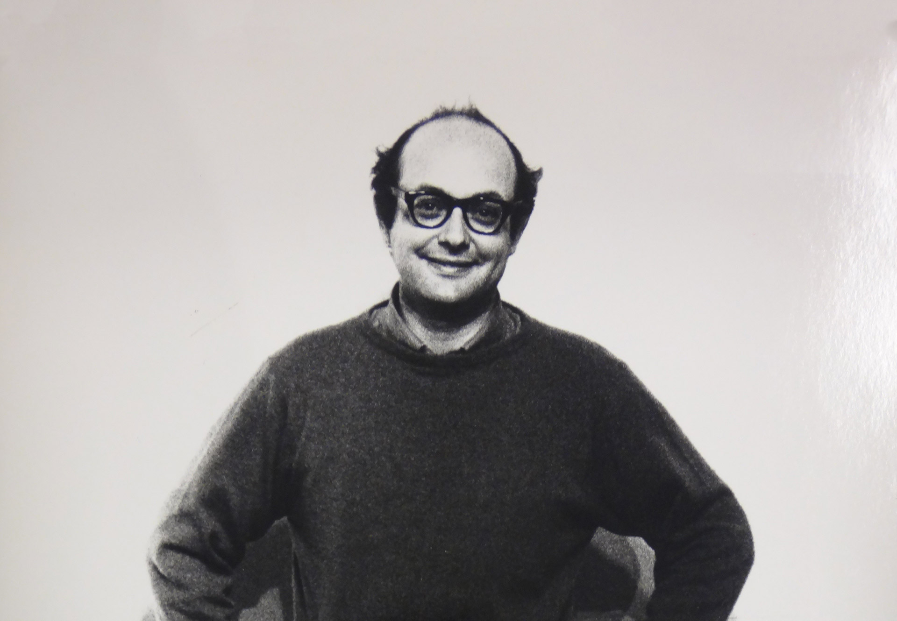
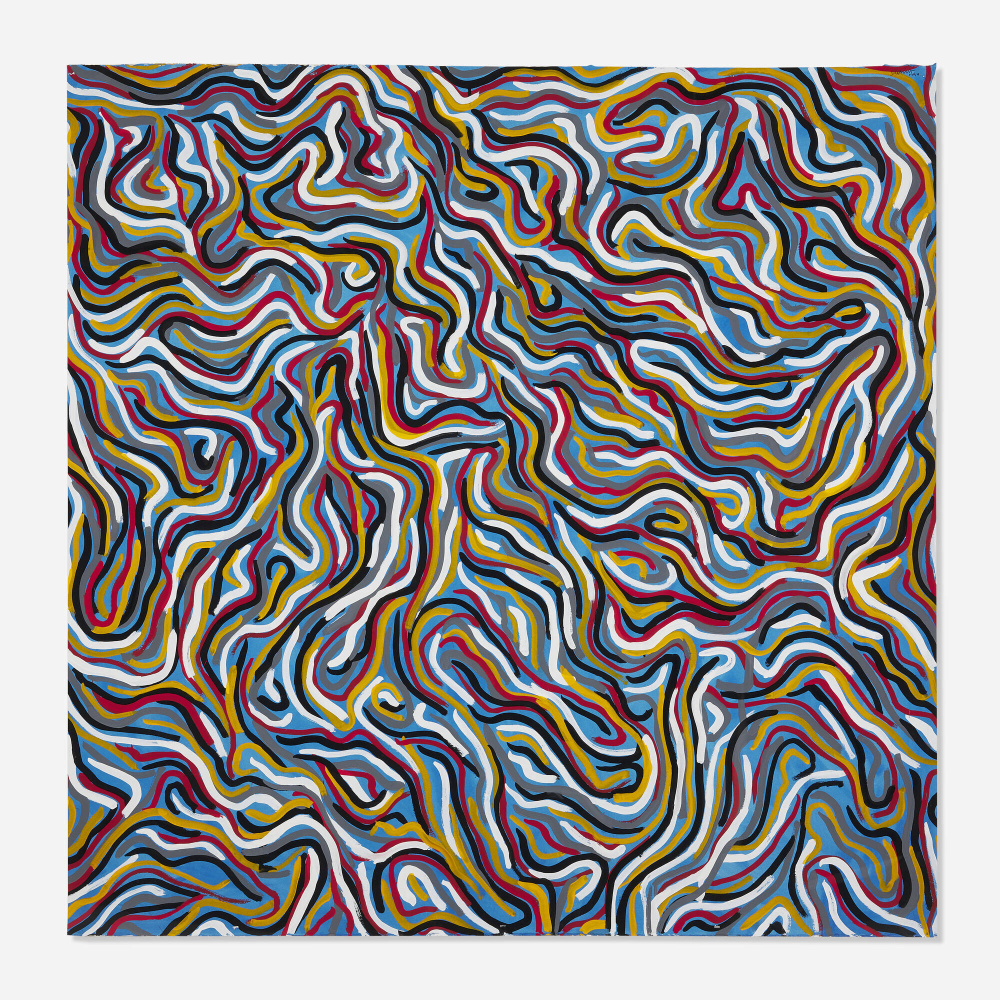
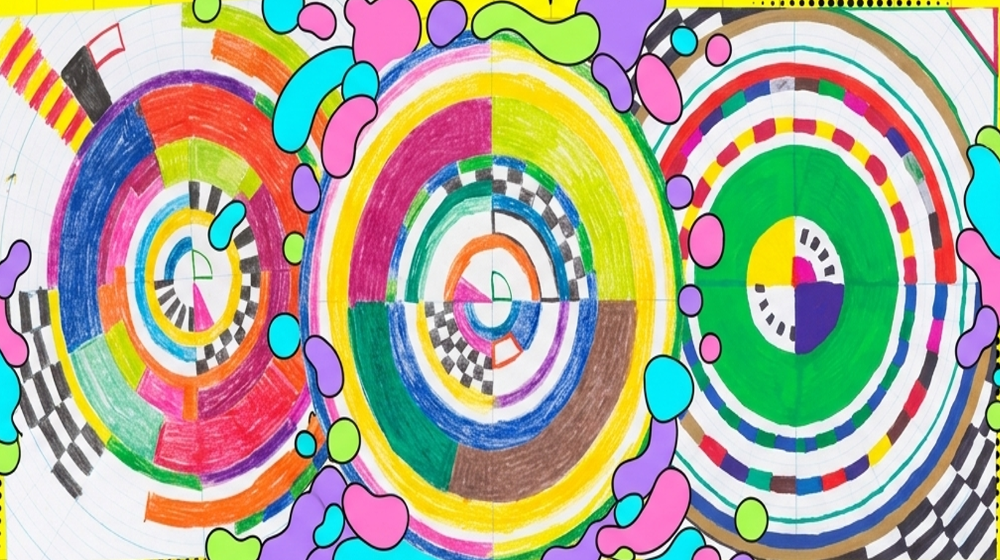

"Cada persona dibuja una línea de forma diferente y cada persona entiende las palabras de manera diferente."


Solomon (Sol) LeWitt (1928-2007), pionero del arte conceptual. Cuando trabajaba para el arquitecto I.M. Pei, afirmó que un arquitecto no construye su propio diseño, pero aún se le considera artista. Un compositor requiere músicos para hacer realidad su creación. Deducía que el arte ocurre antes de que se vea, cuando se concibe en la mente del artista.
"Cuando un artista usa una forma conceptual de arte, significa que toda la planificación y las decisiones se toman de antemano y la ejecución es una tarea mecánica."
Produjo unos 1,350 diseños conocidos como "Dibujos de Pared". Proporcionaba el concepto, una instrucción escrita (matemáticas, arquitectura y diseño), y colaboraba con otros para producir la obra. Dejaba elementos abiertos a la interpretación, por lo que no hay dos exactamente iguales.
Un juego de colorear colaborativo para entender el principio detrás del trabajo de Sol LeWitt.

No hay ganadores ni perdedores en esta actividad.
No hay una forma "incorrecta" de interpretar las instrucciones dadas.
Intenta idear una forma única de completar una instrucción, distinta a los demás.
Se anima a los estudiantes a compartir sus sentimientos sobre los pasos.
Cada artista recibe estas mismas palabras, pero cada obra será diferente. Revela los pasos uno a uno para construir la obra en tu cuadrícula.
* Nota: si usas papel cuadriculado regular, sustituye "anillo" por "cuadrado".